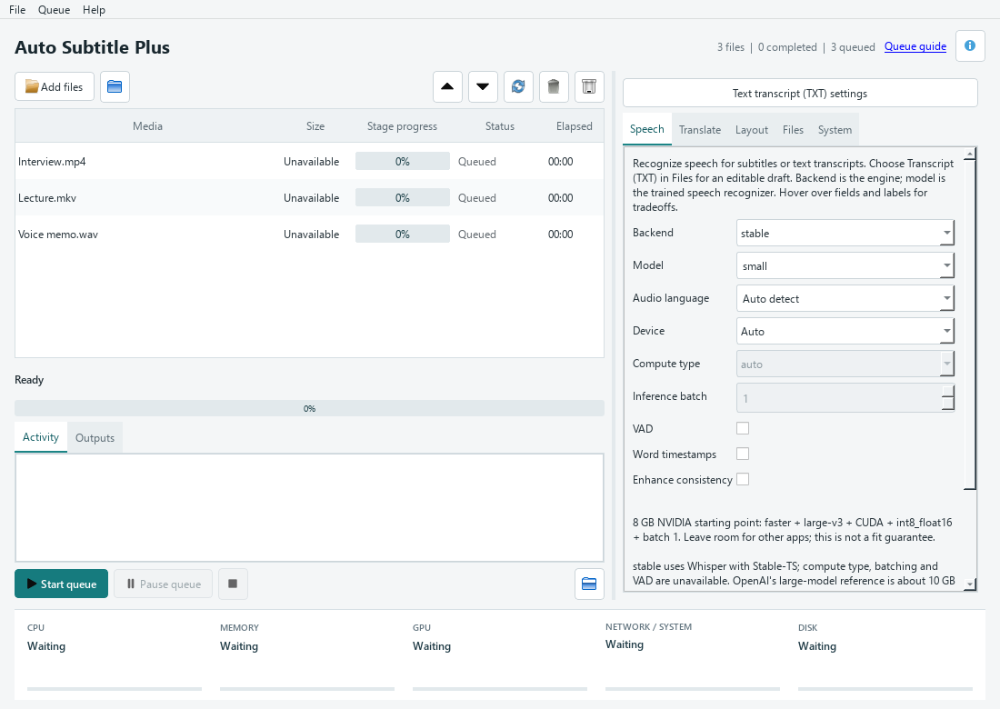
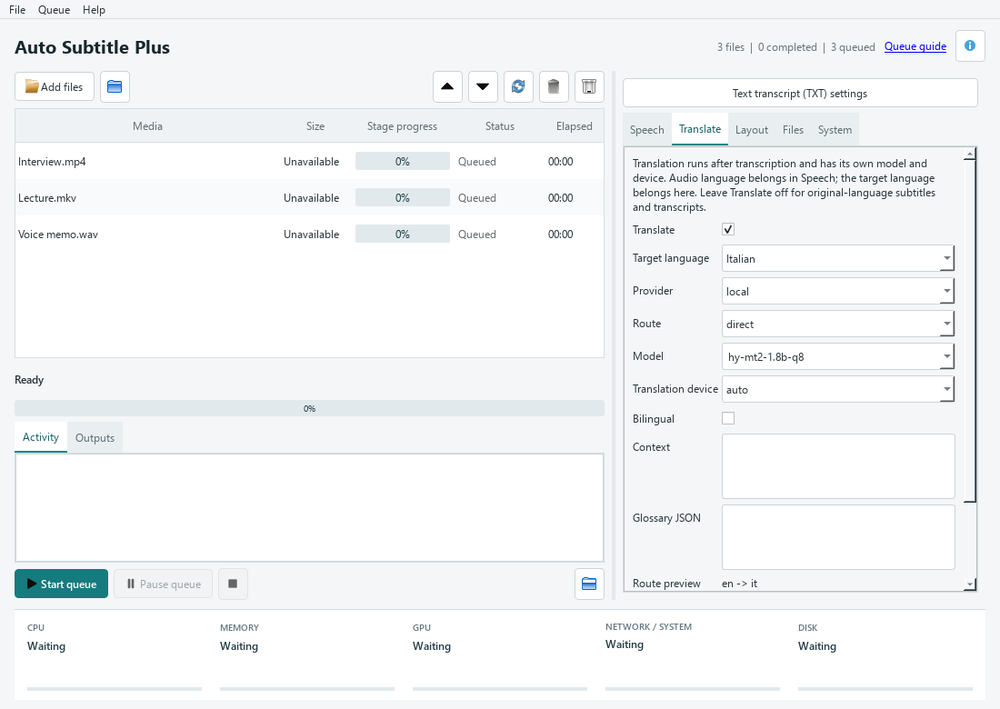

THE USER GUIDE
Your files.
Your workflow.
Everything you need to go from your first video to a repeatable subtitle workflow. Start with the desktop, then go deeper when you need more control.
This manual covers Mac v0.3.0-rc.3 and Windows v0.3.0-rc.2. Windows launcher commands apply only to Windows. Defaults below are for a fresh setup; the desktop remembers your changes. For another version, check its release notes.
MAC / START HERE
Set up the Mac desktop
- Download for Apple Silicon. Get the Mac ZIP, extract it and move
Auto Subtitle Plus.appto Applications. Requires macOS 26+ on Apple Silicon. Python and processing libraries are included. - Install FFmpeg. FFmpeg and ffprobe are separate prerequisites. Homebrew users can run
brew install ffmpeg. The app searches PATH,/opt/homebrew/binand/usr/local/bin. - Open the app. This preview is ad-hoc signed, not Developer ID signed or notarized. If blocked, verify the release checksum and source. Only if you trust it, use System Settings → Privacy & Security → Open Anyway after attempting to open it. Do not disable Gatekeeper.
- Try a short file. Add local audio/video, select CPU and a small speech model, keep translation off, then Start queue. Review the generated SRT. The first run downloads the chosen model.
The Mac GUI supports local processing and local translation only. M2M100-418M is the translation default; select a supported model for your languages. CUDA and Hy-MT2 are unavailable. Cached models work offline; prepare the exact model and route before disconnecting.
Use Command-O to add files and Command-Return to start the queue. Finder Open With also adds media. Tabs follow macOS light/dark appearance. Settings and queue state are stored in ~/Library/Application Support/AutoSubtitlePlus/desktop/state.json; models normally use ~/.cache or your configured cache location. Replace the app to upgrade; keep these user-data folders.
Validated on macOS 26.5 Apple Silicon. Intel Macs, older macOS versions and every model/output combination have not been validated. Release validation and limitations ↗
01 / START HERE
Your first subtitle file on Windows
The Windows ZIP includes a launcher that prepares the app locally. You do not need to install Python yourself. Initial setup needs internet access and a writable folder.
- Download and extract. Choose the GUI ZIP on the download section. Extract the whole archive into a folder you can write to. Keep its files together; do not run the EXE from inside the ZIP.
- Launch the desktop. Open
auto_subtitle_plus_gui.exe. First launch downloads and verifies the CPU runtime. The small ZIP is only the starting point: allow several GB for runtime files, archives and models. - Add a short video. Use Add files or drag a local file onto the window. A short sample makes it easier to check the result before starting a large batch.
- Check Speech. The defaults are
stable, modelsmall, automatic language detection and automatic device selection. Set the spoken language yourself if you know it, especially when the introduction contains music or another language. - Check Files. Leave Subtitle file enabled, format SRT, and output Beside input. Leave translation off to keep the spoken language.
- Start queue. A missing model downloads on first use. When the file completes, select its row and inspect Outputs. Open the subtitle alongside the video in your player and review names, punctuation and timing.
For Interview.mp4, the default desktop setup writes Interview.srt beside the video. It does not burn subtitles into the video unless you enable video output.
Windows 10/11 x64, Windows PowerShell 5.1 and .NET Framework 4.x are required. This release candidate is unsigned and clean-Windows validation is pending. Read its known limitations if Windows flags the download; do not disable system protection.
02 / THE DESKTOP
Understand the queue
Hover over settings, their labels, queue controls, table headings, progress indicators and resource meters for explanations. When an individual setting is disabled, hover over its label to learn its requirements. Tooltips work offline. Click Queue guide in the window header or the guide link in any settings tab to open the matching section of this online manual in your browser.
The left side contains your media queue, progress, activity log and output list. The right side contains five settings tabs. Resource meters run along the bottom.
{kind=link}

Adding and organising files
Use Add files for multiple selections, the folder button for top-level media in one folder, or drag and drop local files. Folder import does not recurse into subfolders. The GUI accepts up to 500 queue entries and rejects URLs and UNC network paths.
Supported extensions: .mp4 .mkv .mov .avi .webm .m4v .mpeg .mpg .ts and .mp3 .ogg .wav .flac .m4a .wma .aac .opus. A recognised extension does not guarantee that a damaged file or its codec can be decoded.
- Move up / down
- Select one row and use the arrow buttons while the queue is idle. This changes processing order.
- Remove selected / clear completed
- Remove entries from the queue while idle. These actions do not delete your original media or output files.
- Retry selected
- Marks selected entries as queued again. Press Start queue to run them. This is different from Retry translation, which specifically reuses a cached transcription.
- Start queue
- Validates pending files and settings, then processes them using a snapshot of the current settings. Controls stay locked while running. Files added during the batch inherit those settings.
- Pause queue
- Finishes the active file, then stops before the next one. Start queue resumes pending work.
- Cancel current
- Stops the active job and pauses the queue. Pending items remain queued. Retry the cancelled item if you want to run it again.
Progress, outputs and recovery
Each row shows size, stage progress, status and elapsed time. Downloads, translation and FFmpeg stages report their own progress. A busy indicator means the stage cannot provide a reliable percentage; it is not a predicted time remaining.
The Activity tab contains diagnostics. Select a row to see its files in Outputs; double-click an output to open it with its associated application, or use the folder button. A failed file keeps its error visible while later jobs can continue.
Queue and settings are saved locally. Reopening the app does not start jobs automatically. Work interrupted by closing or restarting must be reviewed and retried.
Reading the resource meters
CPU and RAM distinguish application usage from system usage. GPU/VRAM figures are device-wide and require supported NVIDIA telemetry. Network rates and totals describe the whole system since app launch, not just this app. Disk shows capacity; “Unavailable” means a measurement could not be obtained, not zero usage.
03 / SPEECH TAB
Turn speech into text
Transcription recognises the words spoken in the source. Translation is a separate step. These controls select the recognition engine, model and hardware.
- Backend Default: stable
stableuses Whisper through Stable-TS, including its timing treatment.fasteruses Faster-Whisper / CTranslate2. Switching backend can change segmentation and timing; it is not a promise of identical results. Faster unlocks compute type, inference batching and VAD.- Model Default: small
- Choose a size from tiny, base, small, medium, large-v3 or turbo, or an accepted model name for the backend. Larger models generally need more memory and processing time.
distil-large-v3.5requires Faster-Whisper and English audio. See model choices. - Audio language Default: Auto detect
- Set the language spoken in the recording, not the desired subtitle language. The editable field accepts language codes such as
enores. Force it when an intro, song or short recording confuses detection. - Device Default: Auto
- Auto selects CUDA when available, otherwise CPU. CPU works without an NVIDIA GPU. CUDA requires the prepared GPU runtime and a compatible driver. This controls transcription independently of the translation device.
- Compute type Default: auto · Faster only
- Controls numerical precision and memory use.
int8is useful for CPU inference;float16orint8_float16can suit compatible GPUs.float32uses full precision. Supported choices depend on hardware; leave auto unless you need to tune memory or performance. - Inference batch Default: 1 · Faster only
- Processes multiple speech chunks per inference batch, not multiple queue files. Values above 1 require VAD and cannot be combined with Enhance consistency. Increase gradually because larger batches need more memory.
- VAD Default: off · Faster only
- Voice activity detection filters non-speech audio. Try it for long silences and enable it for inference batches above 1. Review quiet or unusual speech after changing this setting.
- Word timestamps Default: off
- Requests word-level timing information from the transcription backend. This adds finer timing information; it does not automatically create animated word-by-word captions.
- Enhance consistency Default: off
- Conditions recognition on previous text to maintain continuity. It can also encourage repeated text during difficult or silent passages. Leave it off if repetition appears. Faster batched inference does not support it.
Start with the defaults and a known audio language. If using Faster on a CPU, try small, cpu, int8 and batch 1. Change one setting at a time and compare a short clip before processing the whole queue.
04 / TRANSLATE TAB
Choose how words cross languages
Translation is off by default. Enable Translate only when you want a different subtitle language. The app first transcribes the source language, then translates that text.
{kind=link}

- Target language
- Choose the output language explicitly. The release’s local translation catalogue supports English, Italian, French, Spanish, German and Portuguese, with model-specific directions. This is narrower than speech recognition’s language support.
- Provider Default: local
- Local runs translation on your computer after downloads. On Windows, Google is an explicit online option that sends text for translation and cannot run offline. A local error never silently switches to Google.
- Route Default: direct
directtranslates source text straight to the target.via-entranslates source → English → target and can require two models. Choose it deliberately; the app does not add a pivot automatically. Neither endpoint may be English for via-en. Check the preview before starting.- Model
- Local model choices depend on source, target and route. The Mac default is
m2m100-418m; the Windows default ishy-mt2-1.8b-q8; verify the actual selected model when changing a language or route.opus-mtresolves a supported directional model for each leg. An incompatible selection is rejected rather than silently replaced. - Translation device Default: auto
- Independent of the Speech device. Auto may retry the same model on CPU, with a notice, after GPU memory pressure. Explicit CUDA does not fall back. A CPU retry can take longer.
- Bilingual Default: off
- Places original text above translated text in the same captions. It always preserves source cue timing. Use it for language learning or a two-language audience; it occupies more screen space. It does not mean two independently switchable tracks.
- Context Default: empty
- Background passed to supported translation models, such as “A discussion about photography; aperture refers to the lens.” Contextual models can use surrounding dialogue; sentence-based models do not gain the same dialogue awareness. Review the result rather than assuming instructions are guaranteed.
- Glossary JSON Default: empty
- A JSON object mapping source terms to desired target terms. Keys and values must be strings. Use it to guide terminology; check the final wording. For example:
{"open source": "código abierto"}. - Route preview, Model info & Open model
- The preview shows the language path. Model info shows download size, licence, context type and cache presence; files are verified when the job starts. Open model opens the model’s source page so you can read its details and licence.
Example: Italian audio → French subtitles
Set Speech → Audio language to Italian. Enable Translate, choose French and local, then select direct and a compatible model. Keep Bilingual off for French-only subtitles. In Files, enable Save original if you also want a separate Italian subtitle file. Use via-en only when you want the two-step route; Save intermediate can retain its English result.
05 / LAYOUT TAB
Make translated captions readable
Translated sentences often have different lengths from the original. Adaptive layout can regroup captions within speech spans to balance timing and reading speed. These are layout targets, not guarantees that every sentence will fit perfectly.
| Control | Default | How to use it |
|---|---|---|
| Layout | adaptive | Allows translated captions to split or merge. Choose preserve to retain source cue timing; bilingual always preserves timing. |
| Max chars per line | 42 | Target line width in characters. Lower it for shorter lines; the GUI accepts 1–200. |
| Max lines | 2 | Target number of rendered lines per caption. GUI range: 1–10. More lines occupy more of the picture. |
| Max CPS | 17 | Target characters per second. Lower values allow more reading time. GUI range: 1–80. |
| Min duration | 1 second | Minimum target display time; avoids very brief flashes. GUI range: 0.1–60 seconds. |
| Max duration | 7 seconds | Maximum target display time. Must be at least the minimum duration. GUI range: 0.1–60 seconds. |
For example, a 68-character caption shown for 4 seconds has an average reading speed of 17 characters per second. If the speech span cannot accommodate your targets, the app can warn rather than discard meaning. Proportionally inferred timing is an estimate: review synchronisation in a player.
For a first translation, keep the defaults. Choose preserve when you need to retain the original cue boundaries, and adjust the text or timing manually afterwards if readability still needs work.
06 / FILES TAB
Pick your deliverables
The desktop writes SRT beside each input by default, with replacement disabled. Enable only the extra outputs you need.
- Beside input / Use folder / Output folder
- Beside input keeps results next to each source. Use folder puts them in a chosen writable folder. If queued files share the same base name, a shared destination can cause a conflict; save beside their separate source folders or process them separately.
- Subtitle file & Format Default: on · SRT
- SRT is widely supported by video players and editors. VTT is useful for web video. The CLI flag
--output-srtenables this file even when--subtitle-format vttchooses VTT. - Text file Default: off
- Writes a TXT transcript without subtitle timing. When translating, this contains the final translated text.
- Extracted audio Default: off
- Keeps the extracted audio as an output. Useful when you also need an audio copy from a video; it consumes additional disk space.
- Video & Video mode Default: off · MP4 burn
- Enable Video to produce a subtitled video. MP4 burn encodes captions into the picture so they cannot be switched off. MKV soft stores a selectable subtitle track, which needs a compatible player. Choosing a mode alone does not enable video output.
- Save original Default: off
- When translating, also saves separate original-language exports, such as
Interview.source.it.srt. This does not enable bilingual output. - Save intermediate Default: off
- For via-en, saves the English stage, such as
Interview.intermediate.en.srt. A completed intermediate remains recoverable if the final translation leg fails. - Overwrite Default: off in GUI
- Allows replacement of existing outputs after a confirmation for the queued batch. Leave it off to protect existing files. The CLI defaults to allowing replacement: use
--no-overwritethere for protection.
Bilingual puts both texts into each caption. Save original creates a separate source-language file. Save intermediate retains English from a two-step route. Enable the one that matches your intended output.
07 / SYSTEM TAB
Control reuse and diagnostics
- Offline Default: off
- Forbids missing model/helper downloads and online translation. It does not make an unprepared installation ready to use. Download and test your exact models and runtime first; missing or corrupted files fail clearly.
- Retry translation Default: off
- Requires a matching cached source transcript and reuses it for translation and output. It does not rerun transcription if that cache is missing. Use it after a translation failure or to retry with translation settings; turn it off if the source or speech settings changed and a new transcription is needed.
- Verbose Default: off
- Shows more processing detail for troubleshooting. Logs may contain local paths and content; review them before sharing an issue report.
- Extract workers Default: half the logical CPU count, minimum 1
- Sets audio extraction concurrency where the processing job handles multiple inputs. It does not change AI inference batch size or make the desktop process several queue jobs simultaneously. GUI range: 1–64; keep the default unless extraction is a measured bottleneck.
- Cache folder Default: app-managed location
- Overrides the translation cache root. Choose a writable location with enough capacity. A new location does not automatically migrate existing cached files.
- Clear cache
- While idle, asks before removing cached source transcripts and translation stages. Downloaded models and runtimes remain. Afterwards, Retry translation cannot reuse the cleared source transcripts.
08 / MODEL CHOICES
Choose a model for the job
Speech models and translation models do different work and download separately. A larger model is not a guarantee of a better result on every recording. Compare a representative clip, including names, quiet speech and any specialist terminology.
Speech recognition
- tiny / base: useful for a lightweight first check when resources are limited.
- small: the default starting point.
- medium / large-v3: options when you can afford more memory and processing time.
- turbo: another supported recognition model; actual speed depends on backend and device.
- distil-large-v3.5: English-only and Faster-only. Omitted language resolves to English; a non-English source language is rejected.
Use the CLI’s --list-models with the selected backend for its accepted model list. Translation language is selected separately; do not pick a speech model expecting it to perform arbitrary target-language translation.
Local translation catalogue
The following sizes are approximate raw downloads for this release, in decimal GB. Prepared conversions, runtimes and retained archives require additional disk space. Model licences apply separately from the application’s licence.
| Model | Download | Use and limitations |
|---|---|---|
| hy-mt2-1.8b-q8 | 1.91 GB | Windows default contextual model; unavailable on Mac. Uses neighbouring dialogue. Apache-2.0. |
| hy-mt2-1.8b-q4 | 1.13 GB | Smaller quantised option in the same contextual family. Apache-2.0. |
| hy-mt2-7b-q4 | 4.62 GB | Larger contextual model; plan for greater memory use. Apache-2.0. |
| m2m100-418m | 1.94 GB | Sentence-based multilingual model. MIT. |
| nllb-600m / nllb-1.3b | 2.48 / 5.51 GB | Sentence-based; CC-BY-NC-4.0 and noncommercial research restrictions. Not offered for commercial use. |
| OPUS-MT | 0.30–0.35 GB per direction | Sentence-based, specific language pairs. Most catalogue entries are Apache-2.0; opus-en-de is CC-BY-4.0. Via-en may need two downloads. |
| madlad-3b | 11.78 GB | Larger sentence-based model. Apache-2.0; allow substantial conversion and runtime space. |
OPUS entries cover English ↔ Italian, English ↔ French, English ↔ Spanish and English ↔ German. They are directional: an English-to-French model cannot directly translate Italian to French. The model list and route validation determine available choices. Open the model page from the GUI to read its licence and intended use.
09 / YOUR MACHINE
CPU, CUDA and working offline
On Mac, use CPU and follow the Mac setup instructions. The runtime setup scripts below are Windows-only.
Preparing GPU support
The portable launcher starts with a CPU runtime. Close the app and run Setup CUDA.cmd from the extracted folder to prepare the larger GPU runtime. A compatible NVIDIA driver must already be installed. Then select the desired device in Speech and Translate separately. Setup CPU.cmd switches the runtime profile back.
Runtime setup changes the available libraries, not your selected speech model or translation route. GPU memory is shared with other applications. If memory runs out, reduce the speech batch size, select a smaller model, or use CPU. Automatic translation fallback keeps the same model; it does not silently substitute a smaller one.
Before disconnecting
- Complete dependency setup for the CPU or CUDA profile you will use.
- Run a short job with the exact speech backend/model and translation model/route you need. A via-en route may require both directional models.
- Keep the prepared runtime, downloaded models and any required helpers in their existing data location.
- Enable Offline and repeat the short job while still able to fix any missing dependency. Choose local translation.
In the portable CLI, --offline --help can check startup with an already prepared runtime. It does not prove that your selected speech and translation models are present; use a real short job for that.
10 / KEEP YOUR WORK
Data, repair and upgrades
The Windows portable editions keep downloads, runtimes, model files, caches and desktop state under data beside the EXE. Queue state contains local filenames. Your exported subtitles remain in their chosen output folders.
To share a writable data location between GUI and CLI, set AUTO_SUBTITLE_PLUS_DATA_DIR before launching either edition. For example, in PowerShell:
$env:AUTO_SUBTITLE_PLUS_DATA_DIR = 'D:\AutoSubtitleData'
.\auto_subtitle_plus_gui.exeThis example affects that PowerShell session and the app started from it. It does not move existing data; close both editions before copying a data folder. Installed Python editions normally use %LOCALAPPDATA%\AutoSubtitlePlus for application state and translation data; speech backend caches may use their own locations.
Upgrading without redownloading everything
- Close both editions and back up your data folder and important outputs.
- Extract the newer release into a writable folder, keeping its supplied files together.
- Preserve and reuse your data folder, or point the new launcher at your shared data location.
- Read the newer release notes and run a short test. Updated dependency pins may still require new downloads.
Do not delete data merely to update the application. Old archives and runtimes may be retained for recovery and offline use; deleting the entire folder also removes its models and settings.
Check versus repair
Check Dependencies.cmd verifies installed dependency files. Repair Dependencies.cmd rebuilds the selected runtime from verified cached packages or downloads. They address runtime integrity; Clear cache in the GUI only clears processing stages. No separate pip install or compiler is needed for the portable release.
11 / THE COMMAND LINE
A cookbook for repeatable jobs
Download and extract the CLI ZIP, then open PowerShell in its folder. The examples below use the portable executable. Quote paths containing spaces. Commands generate real files; choose an output folder and use --no-overwrite to protect previous results.
The GUI starts with SRT beside each source and overwrite off. The CLI output directory defaults to the terminal’s current directory and overwrite is on. The examples explicitly request the intended outputs.
Original-language SRT
.\auto_subtitle_plus.exe "C:\Media\Interview.mp4" --language en --output-srt --output-dir "C:\Subtitles" --no-overwriteWrites Interview.srt in the selected output folder. Omit --language en for automatic source-language detection.
Batch videos or transcribe audio
.\auto_subtitle_plus.exe "C:\Media\*.mp4" --output-srt --no-overwrite
.\auto_subtitle_plus.exe "C:\Media\Voice memo.wav" --output-srt --output-txt --no-overwriteThe application expands wildcard paths. The first command writes results in the current directory. Avoid input files with the same base name when sharing an output folder.
Translate locally, with optional original text
.\auto_subtitle_plus.exe video.mp4 --language it --translate-to fr --output-srt --save-original --no-overwrite
.\auto_subtitle_plus.exe video.mp4 --language it --translate-to fr --bilingual --output-srt --no-overwriteThe first creates French subtitles plus a separate Italian source export. The second places both languages into the final captions. Run these in separate output folders if comparing them.
Use an explicit English pivot
.\auto_subtitle_plus.exe video.mp4 --language it --translate-to fr --translation-model opus-mt --translation-route via-en --save-intermediate --output-srt --no-overwriteRequests Italian → English → French and retains the English intermediate. Both directional models must be available or downloadable.
VTT, transcripts and video output
.\auto_subtitle_plus.exe video.mp4 --output-srt --subtitle-format vtt --output-txt --no-overwrite
.\auto_subtitle_plus.exe video.mp4 --output-video --no-overwrite
.\auto_subtitle_plus.exe video.mp4 --output-video --output-mkv --no-overwriteThese produce web subtitles plus text, a video with burned captions, and an MKV with a soft subtitle track respectively. Use separate destinations for experiments.
Faster-Whisper on CPU or CUDA
.\auto_subtitle_plus.exe video.mp4 --backend faster --model small --device cpu --compute-type int8 --output-srt --no-overwrite
.\auto_subtitle_plus.exe video.mp4 --backend faster --model turbo --device cuda --compute-type int8_float16 --inference-batch-size 4 --vad --output-srt --no-overwriteThe CUDA command needs the GPU runtime and compatible hardware. Batch 4 is an example, not a universal optimum; reduce it when memory is limited.
Reuse a transcription after translation fails
.\auto_subtitle_plus.exe video.mp4 --language it --translate-to fr --retry-translation --output-srt --no-overwriteKeep the source and speech settings consistent with the earlier job. If the matching source cache is missing, omit --retry-translation to transcribe again. Add --offline only after all required models and helpers are prepared.
Using an existing Python environment
Advanced users can install the tagged source instead of using the Windows launcher. This path requires a compatible Python environment, Git and FFmpeg on PATH; the portable edition manages its own runtime.
python -m pip install "git+https://github.com/Sectumsempra82/auto-subtitle-plus.git@v0.3.0-rc.2"
auto_subtitle_plus video.mp4 --output-srt --no-overwriteFrom a source checkout, python -m pip install -e ".[gui]" adds the optional desktop. Extras faster and faster-cuda add their backend dependencies. See the tagged installation notes before choosing this path.
Optional model comparisons from source
The Python installation also provides benchmark commands. From a source checkout, install python -m pip install -e ".[benchmark]". These are separate tools, not switches on the portable processing EXE.
auto_subtitle_benchmark clip.wav --reference-srt reference.srt --models small turbo --device cpu --output-json benchmark.jsonCompare model loading time, inference time, real-time factor and word error rate against a reference SRT. Lower real-time factor is faster; lower word error rate is closer to the reference. Paraphrased reference captions can affect the score, and valid timestamp order does not prove accurate alignment. For an excerpt from a longer recording, use --reference-offset in seconds. Run auto_subtitle_benchmark --help for the full set of backend and timing controls.
auto_subtitle_translation_benchmark compares local translation models and direct/via-en routes against reference JSONL examples, reporting chrF++ and resource measurements. It accepts --models, --routes, --device, --offline and required --output-json. Prepare the documented reference format first. Neither metric replaces reviewing meaning, omissions and readability.
12 / OPTION REFERENCE
Find the flag you need
Run .\auto_subtitle_plus.exe --help for the options supported by your installed version. The groups below link back to their detailed explanations.
Input and speech
- paths
- One or more local paths or wildcard patterns. Required for processing, but not for model listings or cache clearing.
- -m, --model · --backend · --language · --device
- Speech model (small), backend (stable), source language (auto-detect) and processing device (automatic). See Speech.
- --list-models
- Lists models for the selected backend and exits without loading a model.
- --compute-type · --inference-batch-size · --vad
- Faster-only precision (auto), inference batching (1) and optional voice detection. Batches above 1 require VAD.
- --word-timestamps · --enhance-consistency
- Optional finer timing and previous-text conditioning. Enhance consistency is incompatible with Faster batches above 1.
Outputs and layout
- -o, --output-dir
- Destination folder. CLI default: current working directory.
- -s, --output-srt · --subtitle-format srt|vtt
- Request a subtitle file and select its format; format defaults to SRT.
- -a, --output-audio · --output-txt
- Keep extracted audio or final plain text. See Files & exports.
- -v, --output-video · --output-mkv
- Output a subtitled video; add output-mkv to use a soft MKV subtitle track rather than burned captions.
- --no-overwrite
- Fail if an output already exists. CLI replacement is otherwise allowed.
- --subtitle-layout adaptive|preserve · --no-adaptive-layout
- Select translated layout. The no-adaptive alias requests preserve; bilingual always preserves timing.
- --max-chars-per-line · --max-lines · --max-cps · --min-duration · --max-duration
- Readability targets: 42 characters, 2 lines, 17 characters/second, and 1–7 seconds. See Caption layout.
Translation
- --translate-to
- Target language. Omit it for original-language transcription.
- --translation-backend, --translation-engine
- Aliases selecting local (default) or google. Google is explicitly online.
- --translation-route · --translation-model · --translation-device
- Direct or via-en route, model ID/family, and auto/cpu/cuda translation device. See Translation settings.
- --bilingual
- Original text above translated text in the same caption.
- --output-source-subtitles, --save-original
- Aliases enabling separate original-language exports during translation.
- --output-intermediate-subtitles, --save-intermediate
- Aliases enabling English intermediate exports for via-en.
- --context · --glossary
- Context string for supported models; glossary as a JSON object or JSON file path. A file such as
--glossary glossary.jsonavoids shell-quoting problems. - --list-translation-models
- Lists local models without downloading. Filter with source language, target language and route.
- --translate-off
- Deprecated compatibility flag. Omitting translate-to already keeps the original language.
System and automation
- --translation-cache-dir · --retry-translation · --clear-translation-cache
- Override the cache, reuse a required source transcript, or clear stage caches and exit while keeping models/runtimes. See System settings.
- --offline
- Forbid downloads and online translation; prepared files must be present.
- --extract-workers
- Audio extraction workers. CLI default: half the physical CPU cores, minimum 1; the GUI computes its default from logical CPUs.
- --batch-size · --max-workers
- Legacy compatibility flags (defaults 10 and 4). They do not tune local translation parallelism: local translation uses token-budget units and sequential translator jobs.
- --verbose · --progress-json · --resources
- Detailed logs, machine-readable progress, and periodic JSON resource snapshots. With progress-json, human messages go to stderr and structured events to stdout. A processing job exits 0 on success and 1 on failure; argument errors can use a different nonzero code. Ctrl+C cancels.
- -h, --help
- Show the installed CLI’s help and exit.
Portable launcher options
These are accepted by the Windows launchers, including the GUI EXE, before the application starts. They are separate from processing options.
- --runtime-device cpu|cuda --setup-only
- Prepare the selected runtime without processing media.
- --check-dependencies
- Verify installed dependency files.
- --repair-dependencies --setup-only
- Rebuild the selected runtime from verified packages.
- --setup-only --offline
- Prepare from already cached, verified archives only. Missing archives cannot be downloaded.
13 / WHEN SOMETHING GOES WRONG
Find a fix
The first launch is slow
The launcher may be downloading and preparing dependencies. A model’s first use adds another download and sometimes conversion. Check available disk space, connectivity and the reported stage. Later runs reuse prepared files; the ZIP size is not the installed size.
Wrong language or repeated words
Set Speech → Audio language to the language actually spoken. Keep Enhance consistency off if repetition occurs. With Faster, try VAD for long silences. Compare a short segment; music, overlapping voices and poor audio may still need manual correction.
Invalid model or unsupported route
Check the source language, target and selected model together. Distil-Large-v3.5 is English-only and Faster-only. OPUS models are directional. Via-en requires two non-English endpoints and support for both legs. Use the model list and route preview; do not assume all upstream model languages are exposed by this app.
CUDA error or out of memory
Confirm that Setup CUDA completed and a compatible NVIDIA driver is present. Reduce inference batch size or use a smaller model. For Faster CPU processing, use CPU with int8. Set translation to CPU separately if that stage is failing. Explicit CUDA translation does not automatically fall back.
Offline or retry reports missing files
Offline needs the exact model, runtime and helper files. Retry translation needs a matching cached source transcript. Turn off Retry translation to transcribe again; prepare missing downloads while online before enabling Offline. Repair Dependencies addresses runtime integrity, not a missing transcription cache.
Output exists or two files share a destination
The GUI protects existing output files by default. Choose another folder or deliberately enable Overwrite after reviewing the affected files. For duplicate base names in a shared destination, save beside separate input folders or process separately. The CLI’s no-overwrite flag provides the same protection against existing outputs.
Start is disabled or an old queue does not resume
Add supported local files and make sure entries are queued. Select an interrupted, cancelled or failed item and retry it, then Start queue. Restoring a saved queue never launches jobs automatically. Settings and queue editing controls are locked during active processing or cache clearing.
The subtitles need editing
Review recognition before blaming translation. Names, numbers, terminology and quiet speech are common checks. Use context or a glossary with a suitable model, and compare preserve versus adaptive layout if timing is the problem. Automated output still needs review before publication; this app is not a full subtitle editor.
Open a GitHub issue with the release version, GUI or CLI, stage, backend/model, source and target languages, CPU/CUDA choice and exact error. Include a minimal command or settings summary. Remove personal paths, transcripts and other private material from logs first.
Ready for your next file?
Start small, review the output, then reuse the settings that work for you.
Get Auto Subtitle Plus Back to the top ↑Reference: v0.3.0-rc.2 source and README. This guide documents the release; it does not change application defaults.